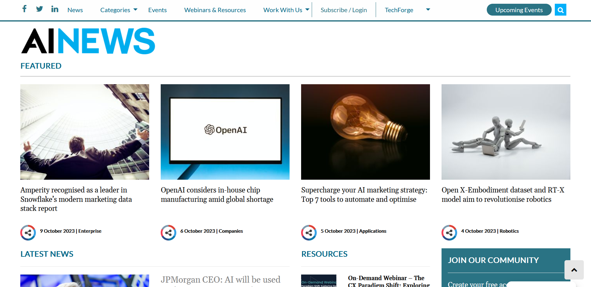

Week 2 - Defining an audience and establishing design ideas
IL Task 1 - Identifying your audience(s)
My topic is Why you need to incorporate AI into your data analysis. This topic lends itself to an audience in the technology industry, as AI and data analysis are tech subjects. I would like to focus my topic on Univeristy leavers and young professionals that are beginning their careers, as this is the position I am in and where I feel I have the most value to offer. From reading the articles and watching videos in my log and resources section, I think that my audience will have the preconception that AI can do all data analysis for them. However, it is often the case, especially with Machine Learning, that this is not used until the very end of the process, if even at all. A benefit of my chosen audience is that I have access to them very easily as they are my peers. Following the guidence from the University of Pittsburgh's Department of Communication here, I constructed the following table:
| Audience Characteristic | Rationale |
|---|---|
| Age | University leavers and young professionals, I would estimate 20-30 years old. |
| Gender | While the tech industry is male-dominated, there are a growing number of female's interested. I will write to both genders. |
| Language proficiency | As most careers in this field require at least an undergraduate degree, I am assuming my audience has a strong grasp of English. I will write as if it is my peer group in an English-speaking country. Third-party translation options are readily available. |
| Education level | Undergraduate or Postgraduate level - similar to my peer group. |
| Attitude towards writer or organisation | I am an unknown and unproven writer in this field. I assume my audience is skeptical of my proficiency and will need to demonstrate my capabilities early on. |
| Knowledge of the topic | This can vary greatly. I am still quite new to the topic and will write as if to myself - someone with some fundemental knowledge of coding and data analysis, but keen to reharse the basics and build upon them before introducing AI tools. I believe this will cover a large audience. |
| Audience action | After interacting with my website I would like the audience to feel like they have learned some fundamentals on the topic and have a stronger grasp of their roadmmap into a career in the field of tech. |
IL Task 2 - Building audience personas
A user persona:
| Name | Elon Zuckerberg. |
| Photo | |
| Occupation | Full time student. |
| Web habits | ChatGPT, Tech podcasts/channels i.e. Lex Fridman, Stack Overflow for coding queries. |
| Quotes | "How will ChatGPT affect my career?" "I like coding but don't know how to take this further." "Elon Musk would totally win in a cage match with Mark Zuckerberg." |
| Knowledge level (specific to product/organisation) | A few years of computer science. Knows basic python. Aware of basic AI prompts. |
| Goals (specific to product/organisation) | Career in tech. |
| Needs/wants | Recap of basics of data analysis, python programming, maybe Excel, SQL. Then further knowledge of AI tools. |
| Skills | Creative problem solver. |
| Narrative | After finding a website created by one of his peers, Elon Zuckerberg read it over, worked through some educational examples, and after a few days had a stronger understanding of his own skills to solve problems with code. He learned how to incorporate AI into this process. |
IL Task 3 - Exploring the audience needs in relation to design
Putting myself in the mindset of a user persona, I utilised the laddering technique I leanred here to explore my audience's needs:
- Attributes: I like this website because it has an interesting topic, coding examples and a nice design. Why?
- Consequences: Examples I can follow makes me feel productive like I'm learning something. An interesting topic of AI makes me feel part of the current deveopments in society. A nice design makes it fun to use. Why?
- Core values: Productive, contemporary, usability. A way to gurantee future success by learning productive and future-proof skills.
Using existing data I verfied that the tech industry is male-dominated, but with emerging interest from women:
- Report from PwC: only 27% of female students say they would consider a career in technology, compared to 61% of males.
After reading about writing user stories here, I created the following:
- As an aspiring tech graduate/young professional, I want to learn about practical use of software and how AI will affect this, so that I can get a job in the field of data analysis or a similar tech role.
- The acceptence criteria for my service are as follows:
- It's done when the user has fundamental knowledge in common software used by the tech industry (top 3? Python, Excel, SQL?)
- It's done when the user can incorporate basic AI tools into these processes.

IL Task 4 - Updating my portfolio
I created this web page and filled it with my thought process for selecting an audience, including tables and lists to display the information.
Most of my thought process behind my audience choice is at the top of this page. Going through these exercises to define my audience has stengthened my confidence is my choice. By choosing university leavers and young professionals, it allows me to provide the most value as these are my peers. I can relate to them, use them for UX testing, and text distubitions. This audience also matches my skill level and knowledge on my topic. I would not be able to provide much value creating a website for experts with years of experience in the field, or teenagers with no experience. I found the laddering method particularly useful as it helped bring my website design down to 3 core values: making users feel productive, address contemporary worries of AI, and to provide a pleasent user experience.
Lab Task 1 - Identify and evaluate websites
The website above is an example of bad web design. You can click on the picture to visit the website.
- The audience
- You are unable to clearly tell who the website is aimed at. One one hand it seems aimed at children because of the colourful graphics and animations. However, the text seems to be quotes from the bible and short references to scripture. Not easily understandable for children. The website offers no clear idea what it is supposed to be. It is obviously to promote Christianity and appears to link to a specific Christian group, but does not state this anywhere. There is no material deeper than quotes and statements from the bible. The website does not provide any means of feedback, interaction or experience. It is a Web 1.0 page.
- Affordances, conceptual models and signifiers
- The purposes seems to be to promote Christianity and a specific group called Maverick Christians, but this is not clear enough. The website is hard to navigate as there is no navigation bar pinned to the top of the page. So when you visit different pages, the navigation menu changes positon and design, making it hard to find your way forward or back. It is difficult to tell what page you are on as the titles do not match the options on the navigation links. The site bombards the user with bright, clashing images and animations. They seem to just be for illustration and offer no narrative.
- Contrast, Repetition, Alignment, Proximity
- The layout is very simple with all the titles and content center aligned, in one section at a time, with the user having to scroll down the page. The layout is very restrictive. The graphics are overused and confuse the user. It offers no place for the eye to rest and induces a sense of anxiety. There is no unified colour scheme and it contains a mix of contrasting and clashing colours that provide no narrative. There is not much balance, but the homepage does have some symmetry which directs the eye to the middle where the navigation is located. There is no consistent layout for the information, navigation, or graphics. Every page feels like a different website. No narrative.
- Content Design
- If the website is designed to educate users of the value of the Bible, it does not offer anything more than opening an actual bible at a random page and reading. The range and depth of the content is so badly organised it is impossible to say it is appropriate. The content seems relevant to users, which would be Christians, however there is no discernible audience beyond this. There are too many mixed design decisions. The content is hard to read and offers no readily available supporting evidence. We are not told who the author is. The website does not display any wider knowledge as there are no links to credible sources of information.
The website above is an example of good web design. You can click on the picture to visit the website.
- The audience
- In comparison to the website above, you can clearly see a particular audience was in mind for the designer of this website. It has a neutral and formal colour scheme of blue and white, and is laid out similar to a news website. The topics of Infrastructure and Reproductive Rights shows the target audience is adults that what to know more about the Democratic party in the US. The range and depth of the material is appropriate for the topic and audience. It offers main policy topics along the navigation bar, and a recent news section on the right of the homepage. Each article offers a good overview of each topic with links to further reading or actions required. The website offers means of interaction through a search bar at the top right. Users can find exactly what they are looking for. It also provided contact information to text or email the party.
- Affordances, conceptual models and signifiers
- The purpose of the website is to provide information on the policies of the party currently elected in the White House in the US, and keep users updated on current news related to this. The website is user-friendly to navigate as it has a navigation bar along the top of the screen. You can easily tell where you are as the title of the web pages matches the links of the navigation bar and menu. The site uses consistent formal images of members of the party to illustrate, but also to create a sense of calm and that the goverment is professional and in control of the country.
- Contrast, Repetition, Alignment, Proximity
- The website has an effective layout - each page contains a unifying graphic and menu at the top. Sections are separated clearly by use of contrasting colours and photos. Graphics related to topics are presented next to text to better illustrate points. The balance between blue, white, and graphics is used well to to create a flow for the user. There is a consistent colour scheme and use of graphics to create a unity. This makes the user feel like all the information is connected to the ethos of the party.
- Content Design
- The website works on a problem relevant to the audience by efficiently providing the most important policies to the party right on the home page. The range and depth of the content is appropriate to someone interested in the broad values of the party, and it contains links to further reading where more knowledgable audience members can read further. The content is very relevant as it provided a broad overview of the main members of the political party, their main goals, recent news and how the audience can interact with them. The content is very readable. There are even accesability options on the left of the screen where users can toggle larger text and a higher contrast mode. The text appears reliable as links are provided to further government departments that specialise in the subject areas. The website displays wider knowledge through these links and associated photos and videos.
Lab Task 2 - Consider your audience
Adopting my user persona from IL Task 2, the White House website has many more features that are suitable. The information is laid out clearly with good contrast, white space and suitable graphics. Links are provided to enhance the reliability of the information. This is a huge feature to promote the core value of user experience. The benefit of this is highlighted even more when compared to the 'bad' website, where there is a clash of many colours, text styles, and no references to where the text came from.
The next core value of productivity is enhanced by these feature as well. The clear navigation options allows the user to create a path through the website, and reading the pages in this order provides them with a sense of accomplishment. If they want to know more about a topic, they can follow the relevant hyperlinks to learn more when desired.
The recent news feature in the White House website connects with my audience's core value of contemporary relevance. Just as in politics, recent news has an affect on current work. This is the case with rapidly developing AI tools being deployed in industry.
Lab Task 3 - Begin a moodboard of design ideas
See the link below to download by moodboard created with Microsoft PowerPoint. I chose this software as it is readily available for all University staff and students, and I am familiar with how it works. Version control will be handled by regular commits to GitHub.
Following the initial version of my moodboard, a few design choices were made apparent to me. I wanted my website to represent the feel provided by other big tech companies, such as Apple and SpaceX, as this is the industry that my audience would be seeking employment in. The design would therefore be similar to a future projection for them. Functionaility-wise, the drop down menus used on the websites on the right of the picture below allow information to be neatly organised and navigation to be clear. I like the vintage computer console and school-book style of the top right image, as this creates an educational and productive energy for the website. However, I am unsure if this will clash with the sleek and refined style I was initially attracted to. A strong white or green contrasted on a black background appears to be a good colour scheme. The contrast makes it easy to read. Gunmetal grey and large pictures can also be used to break up the space.